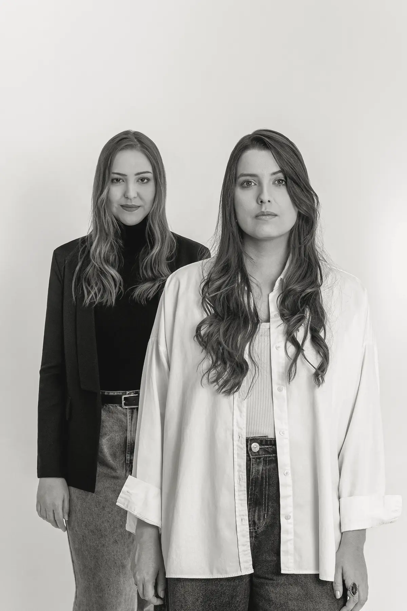
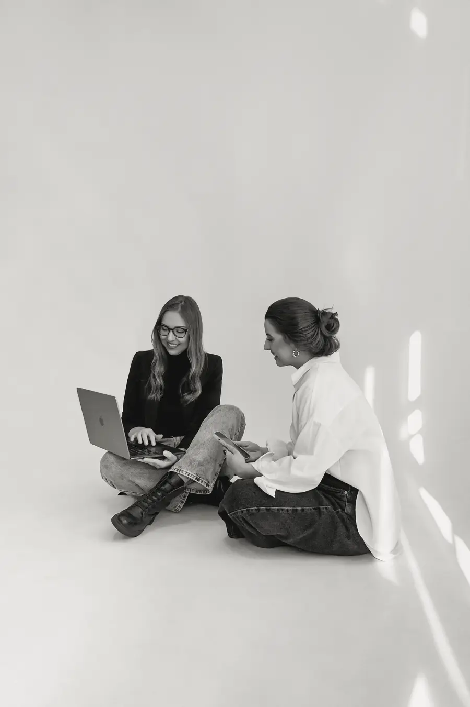
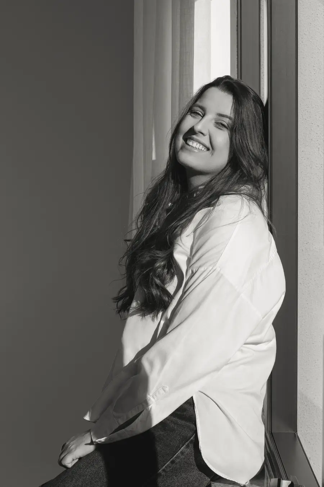
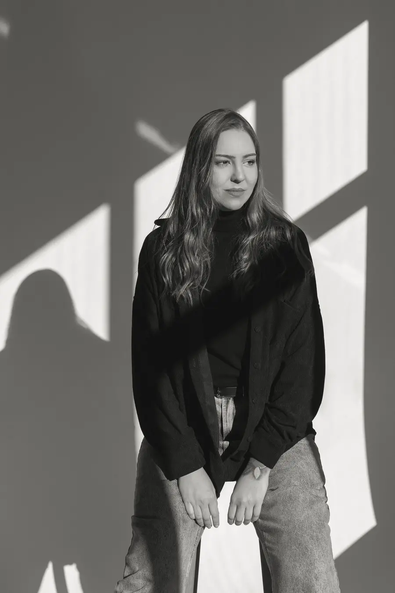
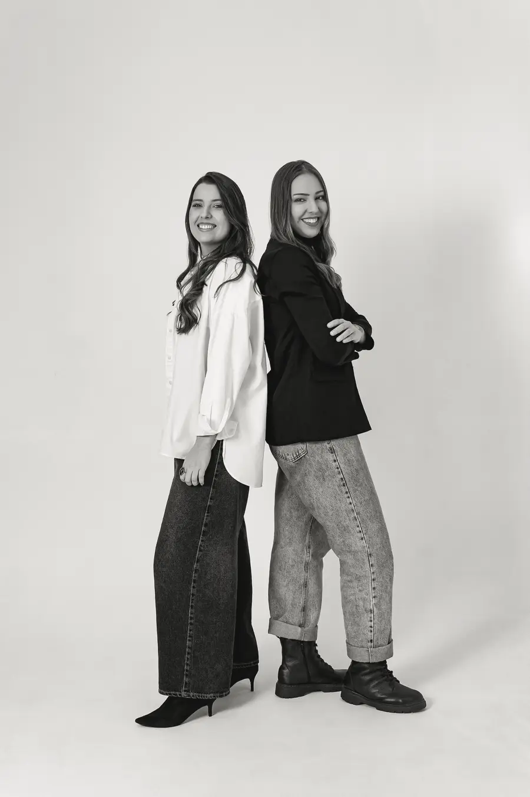
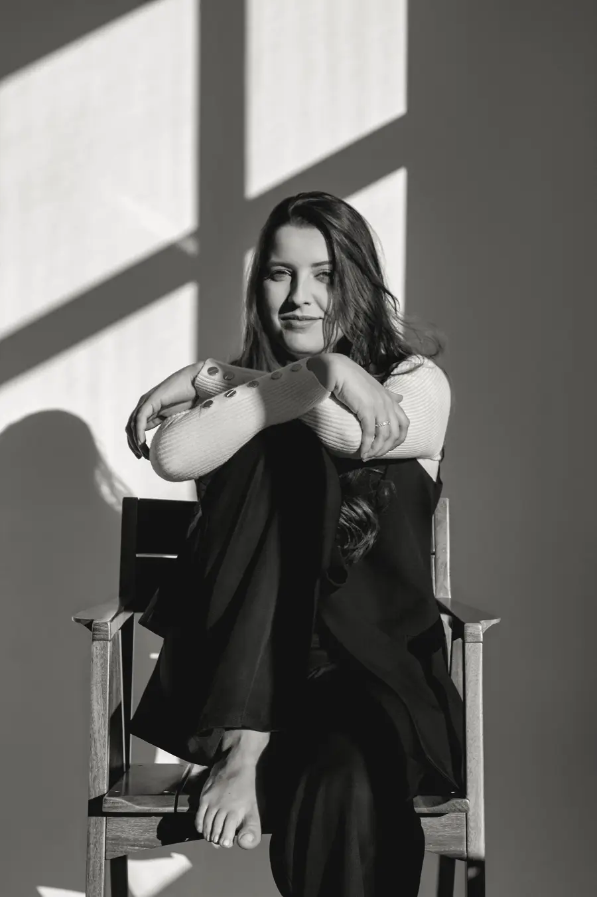

Consultoria de imagem
Conectamos elementos visuais e comunicação para que a imagem transmitida seja coerente com o posicionamento.
Landing page · one page · mobile-first
O sistema visual do site da Closer Branding. Uma extensão do Instagram da marca: preto, branco e cinzas, editorial, com muito respiro. Tudo aqui foi pensado para quem chega pelo anúncio, no celular, e precisa entender em 3 segundos quem são as duas e como conversar com elas.
A marca não tem cor de destaque. A hierarquia vem do peso (Bold × Light), do tamanho e do preto sobre off-white. O preto sólido é reservado para o que pede ação: botões e etiquetas.
Toda seção termina perto de um WhatsApp: no header, no botão flutuante do celular e na chamada final. Instagram é secundário e nunca compete visualmente.
Seções com muito espaço vertical, uma ideia por tela no celular e textos com no máximo 62 caracteres por linha. Menos elementos, mais presença.
Fotos reais das fundadoras, anotações manuscritas e textura de papel trazem a "inteligência humana aplicada". Elas acompanham o texto, nunca o substituem.
"closer." em Poppins Bold e "branding" em Poppins Light Italic. Use o SVG oficial no site; as versões abaixo são recriações tipográficas para referência.
Horizontal · header, rodapé
Horizontal invertido · seções escuras
Empilhado · imagem de compartilhamento, favicon grande
Uma escala neutra levemente quente, para conversar com o fundo de papel e com o tom das fotos. Sem cor de destaque, nem para o WhatsApp.
--color-bg · #EEEDEAPaper. Fundo principal do site.--color-text · #111111Ink. Texto, botões, etiquetas, seções escuras. 16.1:1 no paper.--color-text-muted · #5C5B57Texto de apoio, legendas. 5.9:1 no paper (AA).--color-watermark · #D4D2CCMarca d'água e bordas finas. Só decorativo.Escala neutra · --gray-0 → --gray-950
| Token semântico | Valor | Uso |
|---|---|---|
| --color-bg | gray-100 | Fundo padrão de todas as seções claras |
| --color-bg-raised | gray-50 | Cards de serviço e painéis que precisam se destacar levemente |
| --color-bg-inverse | gray-900 | Manifesto, chamada final, rodapé, botão primário |
| --color-text-muted | gray-600 | Apoio, nicho e cidade nos cases. Nunca usar gray-500 para texto |
| --color-text-inverse-muted | gray-400 | Texto de apoio em fundo escuro (7.9:1) |
| --color-border | gray-300 | Divisores finos (1px) |
| --color-border-strong | gray-900 | Linhas editoriais acima de cada serviço (1.5px), botão secundário |
Ritmo sugerido de fundos na página: claro → escuro (manifesto) → claro → claro → claro → claro → claro → escuro (chamada final + rodapé). Duas manchas pretas marcam o início do pensamento e a decisão.
Três vozes: Poppins fala alto (títulos, botões), Merriweather conversa (textos), Caveat anota à mão (anotações). Escala fluida com clamp(): cresce suavemente de 360px a 1280px, sem saltos de breakpoint.
Branding, posicionamento e storytelling para quem quer ser percebido por aquilo que realmente é.
Uma agência criada por duas mulheres que decidiram unir estratégia & criação para fazer branding de um jeito diferente: olhando primeiro para a essência, antes da estética.
Base de 4px. Os espaços grandes (96px+) são o que torna o layout editorial: na dúvida, mais respiro.
| Token | Valor | Uso típico | |
|---|---|---|---|
| --space-1 | 4px | Ajustes finos, gap da grade do feed | |
| --space-2 | 8px | Entre etiquetas | |
| --space-3 | 12px | Ícone ↔ texto no botão | |
| --space-4 | 16px | Título ↔ parágrafo curto | |
| --space-5 | 24px | Entre parágrafos, entre botões | |
| --space-6 | 32px | Padding de cards, botão (lateral) | |
| --space-7 | 48px | Título de seção ↔ conteúdo | |
| --space-8 | 64px | Entre blocos de uma seção | |
| --space-9 | 96px | Respiro editorial | |
| --section-y | 72→160px | Padding vertical de cada seção (fluido) | |
| --gutter | 20→48px | Margem lateral do container |
1 coluna, margem 20px. Uma ideia por tela. Fotos sangram até a borda quando forem protagonistas.
2 colunas para serviços e cases. Header ainda com menu compacto até 900px.
12 colunas, container 1240px. Texto em 5–6 colunas, foto em 6–7. Botão flutuante some (o header já tem o WhatsApp).
Retos (--radius-0) em fotos, cards e etiquetas: é editorial, como papel. Pílula (--radius-pill) só em elementos clicáveis — botões, seletor, flutuante — para que a forma já diga "toque aqui".
Praticamente nenhuma. Sombra só no botão flutuante (--shadow-float), porque ele flutua sobre o conteúdo. Separação vem de linhas finas e troca de fundo.
Ruído de papel em SVG embutido (.paper), opacidade 5%, sem requisição extra. Se usar foto de papel amassado, no máx. 1 por página, WebP < 60kb, opacidade ≤ 8%.
| Movimento | Duração | Curva | Onde |
|---|---|---|---|
| --dur-fast | 150ms | --ease-out | Hover e pressão de botões, sublinhado dos links |
| --dur-base | 280ms | --ease-out | Seletor Antes/Depois, menu, header ao rolar, flutuante |
| --dur-reveal | 800ms | --ease-out | Entrada suave ao rolar: opacidade 0→1 e 24px para cima, uma vez só. Escalonar filhos em 80ms |
Com "reduzir movimento" ativo no aparelho, todas as durações vão a 0 e nada se desloca.
O ensaio já tem três climas: estúdio claro, luz de janela com sombras e fundo marrom. No site, tudo em P&B para manter a paleta. Prioridade para o claro e para a luz de janela, que conversam com o fundo de papel.




Classes prontas em components.css. Todos com alvo de toque ≥ 48px e foco visível.
| Variante | Classe | Quando usar |
|---|---|---|
| Primário | .btn | Conversar no WhatsApp. Um por tela, no máximo. |
| Secundário | .btn--secondary | Ver o Instagram, ver perfil do cliente. |
| Fantasma | .btn--ghost | Links de baixa ênfase ("ver todos os serviços"). |
| Flutuante | .fab | WhatsApp fixo no canto inferior direito, só abaixo de 1024px. Some enquanto a chamada final está na tela. |
Claro · tamanhos sm / md / lg e estados
Escuro · chamada final
| Estado | Visual | Comportamento |
|---|---|---|
| Padrão | Pílula preta, texto paper, Poppins Medium 16px | — |
| Hover | Fundo gray-700 (secundário: preenche de preto) | 150ms |
| Pressionado | scale(.98) | Feedback tátil no celular |
| Foco | Contorno 2px ink, afastado 3px | Só via teclado (:focus-visible) |
| Carregando | Spinner no lugar do texto | Não aplicável a links do WhatsApp, só a formulários futuros |
https://wa.me/5547933884494?text=Oi%2C%20Closer!%20Vi%20o%20site%20de%20voc%C3%AAs%20e%20quero%20entender%20como%20voc%C3%AAs%20podem%20ajudar%20a%20minha%20marca.
Todos os botões de WhatsApp usam o atributo data-wa e disparam fbq('track','Contact') no clique, para medir a conversão do anúncio. Abrir em target="_blank" rel="noopener".
Faixa preta, Poppins Bold caixa alta. Rótulo acima do nome do cliente e etapas.
Título de serviço "em faixa", como no carrossel "Afinal, o que fazemos?". Pode quebrar em 2 linhas: cada linha vira uma faixa (box-decoration-break: clone).
Palavra manuscrita + seta SVG desenhada. Decorativa: aria-hidden na seta, máx. 1–2 por seção.
Sem caixa, sem sombra: uma linha preta de 1.5px separa os 7 serviços como num índice de revista. Celular: lista empilhada. Desktop: 2 colunas.
Conectamos elementos visuais e comunicação para que a imagem transmitida seja coerente com o posicionamento.
Definimos as melhores estratégias de comunicação, analisamos oportunidades e organizamos ações e conteúdos.
Entendemos quem você é, seu nicho e como está sendo percebido hoje.
Definimos posicionamento, mensagens e planejamento de conteúdo.
No celular, um seletor segmentado troca a grade (economiza rolagem e cria um momento de descoberta). No desktop ≥ 1024px, as duas grades lado a lado e o seletor some.
Fotógrafa · Santa Catarina
Trazer constância e uma identidade real para o perfil: mostrar quem é a Patrícia.


antes: não existia perfil profissional
O estado vazio é uma afirmação, não um erro: borda tracejada + frase manuscrita.
role="tablist", setas ← → trocam a aba, prints com alt "Publicação de [cliente], antes/depois da Closer".
Faixa fixa no rodapé, altura máx. ~96px no celular (não cobre o primeiro CTA). Pixel só carrega após "Aceitar". O botão flutuante sobe acima da faixa enquanto ela existir.
Como os componentes se combinam nas 9 seções do briefing.
Hero · referência de composição (desktop)
Pessoas e marcas, na sua essência.
Branding, posicionamento e storytelling para quem quer ser percebido por aquilo que realmente é.
Conversar no WhatsAppOrdem da página e ponto de ação de cada seção